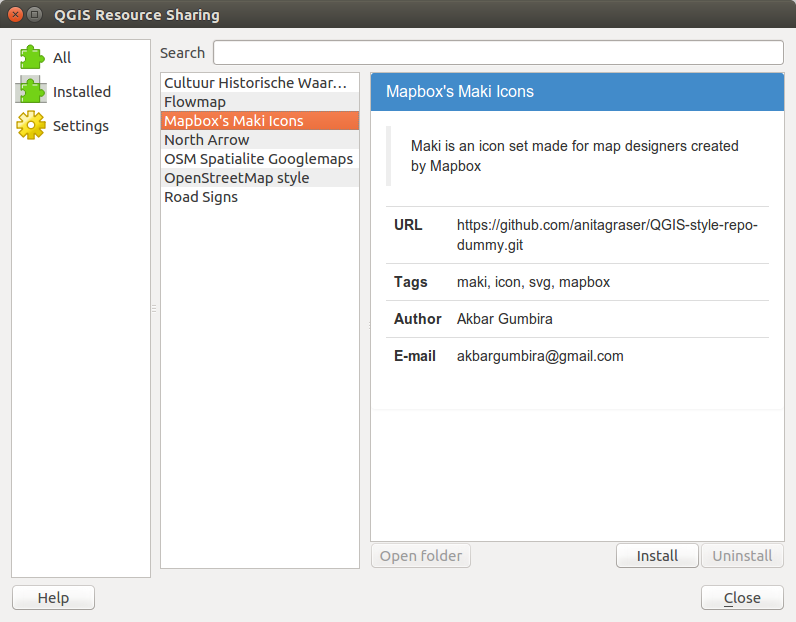

Releasing QGIS Resource Sharing Plugin
Finally, Google Summer of Code coding period has ended last week. My project is under OSGeo organization working on QGIS. The proposal is to make a tool that allows QGIS users to share SVG, symbols and colorramps, and styles easily. Just a few days ago I released the plugin with version 0.5. So please, go ahead open your QGIS and install the plugin!
Background
In the beginning, I proposed a rather conventional system: web service based architecture and implementing the client in the QGIS. In the community bonding period, we did some brainstorming and decided to go with a directory based repository where users can put the repository basically everywhere rather than putting the resources on our server.
If you want to know the project in a 5-minutes presentation, please read this slide here: Final Report - Presentation (don't worry, it's a webpage for your convenience)
So, what can I do with the plugin?
As I mentioned earlier that with this plugins, users should be able to download collections available from the repositories. The list of repositories is registered in the Settings tab. There are only 7 collections available now, which is not that great :)

I have resources I want to share, how can I share mine?
I have made the documentation on how to create a repository and publish it. Please read here QGIS Resource Sharing - Documentation. Please check that page and read the 'For Authors' section. Contact me (by email or even create an issue in the github repository) if there is anything unclear.
Like any system that relies on its data, this tool would be useless if there's nothing interesting there for users to install. Hopefully QGIS users will start to use this tool to share resources among users. So please, encourage your friends who make cool maps to make a repository for the betterment of QGIS! :)
Acknowledgments
I know that I say thanks a lot, but to show that I really appreciate their helps, I will just say it here again :)
Thanks to my mentors (Alessandro Pasotti and Anita Graser) for their constant helps on giving me feedback. Richard Duivenvoorde for the idea with the directory-based repository and involve himself into this project in many ways. Also for showing me his cool hackerspace in Den Haag and taking me to an Indonesian restaurant there. After one year living in Poland, I was so excited to see so many tasteful Indonesian dishes that I couldn't decide which one to choose. Tim Sutton for his feedbacks and comments from the beginning. Martin Dobias and Nyall Dawson for their technical input.